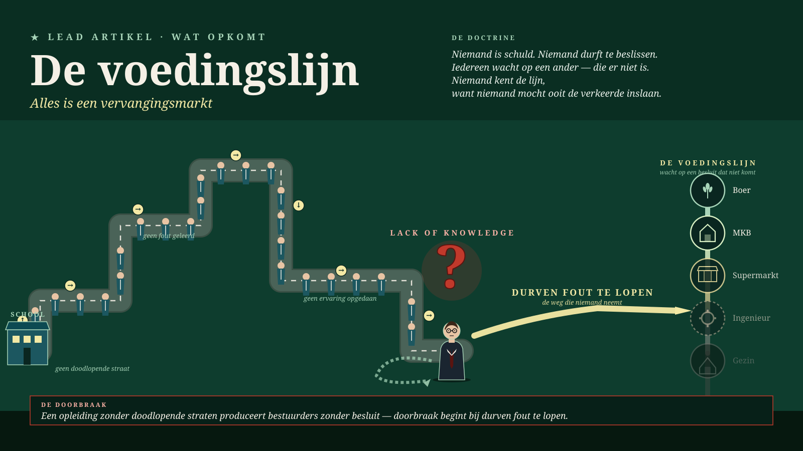

Malta, Juni 2026 · Methodologie
Die Versorgungslinie — alles ist ein Erneuerungsmarkt
Der Mut, revolutionär zu sagen, dass etwas nicht stimmt, fehlt aus Mangel an Selbsterkenntnis — ein struktureller Fehler, kein Charakterfehler. Ganz Europa hat seine Umwege zugemauert; nirgendwo kann mehr eine echte Entscheidung fallen. Die Gesetze der Menschen vor uns kennen die Zukunft nicht — die Natur kennt sie, mit drei Milliarden Jahren Erfahrung, und muss wieder an erster Stelle stehen.
Den ganzen Beitrag lesen →